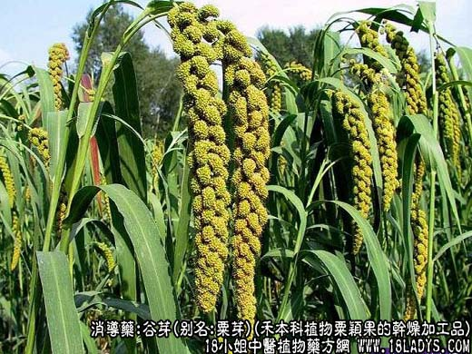
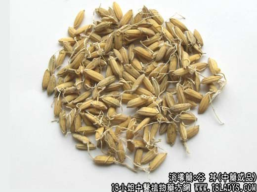

原文出处:本文转载自中药大全网。
原文连接:https://www.daquan.com/post/2029.html
原文连接:https://www.daquan.com/post/2029.html



本品为少常用中药。原载《本草纲目》，原名粟糵。
别名：粟芽、红谷芽。
来源：为禾本科一年生草本植物粟的颖果，经水湿生芽后的干燥加工品。栽培。
产地：主要产于华北地区。
性状鉴别：本品呈小球形，直径约1毫米。表面有两层稃壳，淡黄色或橙色，光滑，多已开裂，并生长出1～毫米须根，稃壳内含种仁一粒（小米）。质坚，粉性。气无，味微甜。以颗粒匀净，淡黄色或橙色，生过根芽者为佳。
主要成分：含淀粉分解酶、蛋白质、脂肪。
功效与作用：开胃、消滞，其原理为健胃、助消化，所含的淀粉为解酶能把淀粉分解为单糖。
炮制：生用、炒用或炒焦。
性味：甘、温。
归经：入脾、胃经。
功能：健脾胃，消食积。
主治：食积胀满不化，食欲不振等症。
临床应用：用于治疗食滞胀满，食欲不振，一般多与麦芽同用，也可单用。小儿外感风滞有呕吐、发热者，配解表药和清热化湿药，方如外感风滞方。谷芽和麦芽比较，谷芽消积助消化之力不如麦芽；谷芽助消化，偏于消食下气，对热滞者更适宜；麦芽助消化，稍带健脾作用，对寒滞而食物吸收不全者更适宜。但总的来说，两者的作用大同小异，不一定要拘泥细分。谷芽入煎剂后，其效力大有减损，故以研成细粉直接冲服较好。又谷芽的有效成分，炒焦后其效力降低很多，而微妙则并不影响。
用量：6~15g。
处方举例：外感风滞方：谷芽15g，藿香6g，蝉蜕4.5g，防风0.5g，云苓7g，苏梗15g，薄荷3g（后下），川连2.1g水煎服。
注：1、天津市习用橙色红谷芽。北京市习用黄谷芽，另将红谷及红谷芽作涩肠止泻药，也用于解表透疹。2、此种谷芽华北、东北等地习销，南方地区不用。